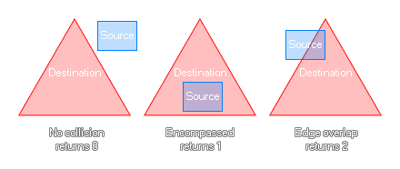

rectangle_in_triangle(sx1, sy1, sx2, sy2, dx1, dy1, dx2, dy2, dx3, dy3);
| Streit | Beschreibung |
|---|---|
| sx1 | Die X-Koordinate der linken Seite des Quellrechtecks. |
| sy1 | Die y-Koordinate der oberen Seite des Quellrechtecks. |
| sx2 | Die X-Koordinate der rechten Seite des Quellrechtecks. |
| sy2 | Die y-Koordinate der unteren Seite des Quellrechtecks. |
| x1 | Die x-Koordinate der ersten Seite des zu überprüfenden Dreiecks. |
| y1 | Die y-Koordinate der ersten Seite des zu überprüfenden Dreiecks. |
| x2 | Die X-Koordinate der zweiten Seite des zu überprüfenden Dreiecks. |
| y2 | Die y-Koordinate der zweiten Seite des zu überprüfenden Dreiecks. |
| x3 | Die x-Koordinate der dritten Seite des zu überprüfenden Dreiecks. |
| y3 | Die y-Koordinate der dritten Seite des zu überprüfenden Dreiecks. |
Rückgabe: Echt.
Diese Funktion prüft einen rechteckigen Bereich, den Sie definieren, um zu sehen, ob er nicht kollidiert, sich vollständig innerhalb der Zielgrenzen befindet oder, wenn er sich einfach berührt, ein definierter dreieckiger Bereich ist. Wenn sie sich überhaupt nicht berühren, gibt die Funktion 0 zurück, wenn die Quelle vollständig innerhalb des Ziels ist, wird sie 1 zurückgeben, und wenn sie sich einfach überlappen, wird sie 2 zurückgeben. Das Bild unten zeigt dies:

var inst = instance_nearest(x, y, obj_Player);
if instance_exists(inst)
{
var x1 = x + lengthdir_x(100, image_angle -
45);
var y1 = y + lengthdir_y(100, image_angle -
45);
var x2 = x + lengthdir_x(100, image_angle +
45);
var y2 = y + lengthdir_y(100, image_angle +
45);
if rectangle_in_triangle(inst.bbox_left,
inst.bbox_top, inst.bbox_right, inst.bbox_bottom, x, y, x1, y1, x2,
y2) == 1
{
can_see = true;
}
}
Der obige Code verwendet die rectangle_in_triangle Funktion als "Sichtkegel", um nach einer Instanz von "obj_player" zu suchen. Wenn die vollständige Begrenzungsbox innerhalb des gegebenen dreieckigen Bereichs liegt, wird eine Variable auf gesetzt true.